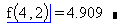

Evaluating a Function |
Functions allow you to use expressions over and over again in your worksheet without having to reenter them repeatedly.
| Discussion and Example |
To evaluate a function, either built-in or user-defined:
Type the name of the function, followed by a left parenthesis.
Type a list of argument values separated by commas followed by a right parenthesis.
Press the "=" operator.

If you can't remember the exact name or argument list of a built-in function, use the Insert Function list.
Instead of a number, you can put any valid Mathcad expression in a function's argument list. For example,
w := 2 t := 2
f(w·t, 2) = 4.909
When evaluating a function, you may get any of a variety of error messages about the domain of the arguments. Some of these are specific to the built-in functions and operators which you are using in your expression, and some of them have to do with the type signature of the function - that is, the limits on the types of the arguments given the structure of the function itself.
When trying to interpret why a function call isn't evaluating, try to trace the error or look at the type signature by typing the name of the function and [=].